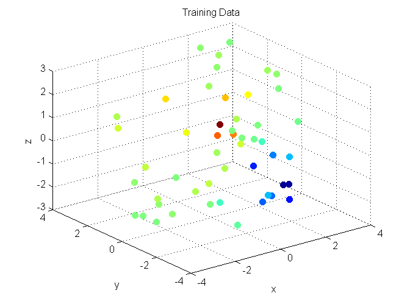
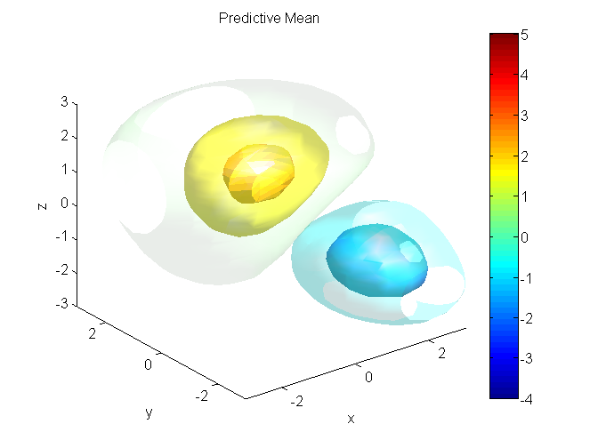
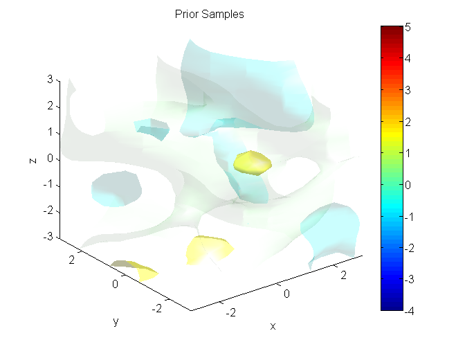
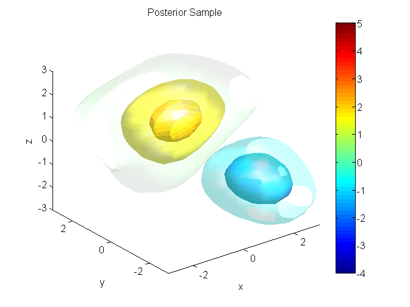

Contents
%%%%%%%%%%%%%%%%%%%%%%%%%%%%%%%%%%%%%%%%%%%%%%%%%%%%%%%%%%%%%%%%%%%%%%% % Gaussian Process Demo Script % Demonstrates GP regression using the taco-pig toolbox on 3-D Data. %%%%%%%%%%%%%%%%%%%%%%%%%%%%%%%%%%%%%%%%%%%%%%%%%%%%%%%%%%%%%%%%%%%%%%% %Add optimization folder % p = pwd(); slash = p(1); % addpath(genpath(['..',slash,'optimization'])) addpath(genpath(['optimization']))
%%%%%%%%%%%%%%%%%%%%%%%%%%%%% 3-D Example%%%%%%%%%%%%%%%%%%%%%%%%%%%%%
close all; clear all; clear functions; clc; % import tacopig.*;
Set up 3-D Data
Training Data
groundtruth = @(x,y,z) 5*exp(-(((x).^2)/5+((1-y).^2)/2+((0.5-z).^2)/3))... -4*exp(-(((2-x).^2)/2+((-1-y).^2)/5+((-1.5-z).^2)/2)); X = (rand(3,50)-0.5)*6; y = groundtruth(X(1,:),X(2,:),X(3,:))+1e-2*randn(1,size(X,2)); [xeva yeva zeva] = meshgrid(-3:0.5:3,-3:0.5:3,-3:0.2:3); xstar = [xeva(:)';yeva(:)';zeva(:)']; figure; scatter3(X(1,:),X(2,:),X(3,:),40,y,'filled') xlabel('x');ylabel('y');zlabel('z'); title('Training Data') pause
Set up Gaussian process
% Use a standard GP regression model: GP = tacopig.gp.Regressor; % Plug in the data GP.X = X; GP.y = y; % Plug in the components GP.MeanFn = tacopig.meanfn.ConstantMean(0); GP.CovFn = tacopig.covfn.SqExp();%SqExp(); GP.NoiseFn = tacopig.noisefn.Stationary(); GP.objective_function = @tacopig.objectivefn.NLML; GP.solver_function = @anneal; % Initialise the hyperparameters GP.covpar = 1*ones(1,GP.CovFn.npar(size(X,1))); GP.meanpar = zeros(1,GP.MeanFn.npar(size(X,1))); GP.noisepar = 1e-3*ones(1,GP.NoiseFn.npar);
Learn & Query
GP.learn(); GP.solve(); [mf, vf] = GP.query(xstar); sf = sqrt(vf);
Running simulated annealing. Does not use gradients. Initial temperature: 1 Final temperature: 3.21388e-07 Consecutive rejections: 1278 Number of function calls: 8906 Total final loss: 39.027
Visualise GP Outputs
% Build a colormap cmap = jet(5); levels = linspace(-2.5,3.5,5); % Generate isosurfaces figure; for ii = 1:5 camlight lighting gouraud hh(ii) = patch(isosurface(xeva, yeva, zeva, reshape(mf,size(xeva)), levels(ii))); set(hh(ii), 'Facecolor', cmap(ii,:), 'Edgecolor', 'none', 'facealpha', (1-(5-abs(levels(ii)))/5)); axis([-3 3 -3 3 -3 3]) caxis([-4,5]); xlabel('x');ylabel('y');zlabel('z') colorbar end title('Predictive Mean') figure; for i = 1:5 fstar = GP.sampleprior(xstar); clf for ii = 1:5 camlight lighting gouraud hh(ii) = patch(isosurface(xeva, yeva, zeva, reshape(fstar,size(xeva)), levels(ii))); set(hh(ii), 'Facecolor', cmap(ii,:), 'Edgecolor', 'none', 'facealpha', (1-(5-abs(levels(ii)))/5)); axis([-3 3 -3 3 -3 3]) caxis([-4,5]); xlabel('x');ylabel('y');zlabel('z') colorbar end title('Prior Samples') pause(0.5) end figure; for i = 1:5 fstar = GP.sampleposterior(xstar); clf for ii = 1:5 camlight lighting gouraud hh(ii) = patch(isosurface(xeva, yeva, zeva, reshape(fstar,size(xeva)), levels(ii))); set(hh(ii), 'Facecolor', cmap(ii,:), 'Edgecolor', 'none', 'facealpha', (1-(5-abs(levels(ii)))/5)); axis([-3 3 -3 3 -3 3]) caxis([-4,5]); xlabel('x');ylabel('y');zlabel('z') colorbar end title('Posterior Sample') pause(0.5) end  